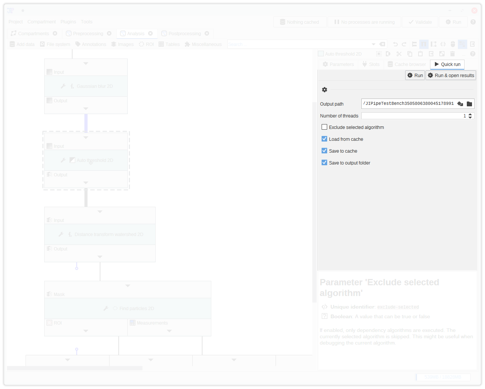
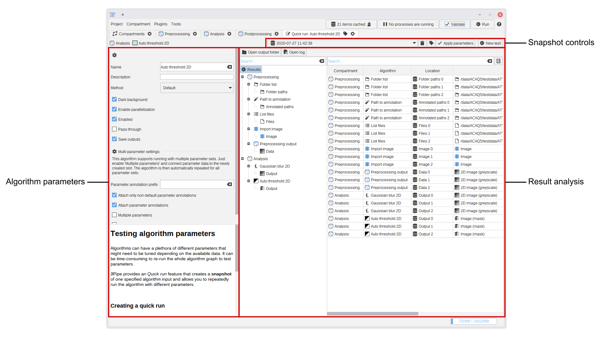

Running a single node
Many algorithms require plenty of user-defined parameters to create the expected results. Finding those parameters on the other hand can be very time-consuming due to the requirement of repeating all previous and following processing steps.
JIPipe comes with a feature termed Quick Run that makes it easier to only test a part of an analysis pipeline. You can find the testbench by selecting an algorithm in the algorithm graph and selecting the Quick Run tab.
It will ask for a folder where to store algorithm outputs. For most cases, you can leave the folder as is - but if you expect to generate large amounts of output data, you should select a folder on a drive that can store as much data. Click Run & open results to create the testbench. JIPipe then will run the pipeline up until the selected algorithm and open a new tab.
The Quick Run expects that all relevant algorithms are valid and will tell you if it finds issues. Please fix the issues and click "Retry".
You can also do a Quick Run from an algorithm's right-click context menu. Here you will also find a related option called "Update cache" that just updates the cache of the selected node.
If you click Run, the results will not be shown. Instead, if enabled, data will just be stored into the Cache

Result UI
After clicking Run & open results and generating the results, JIPipe will open a new tab in its user interface. It contains a modified version of the result analysis interface that also allows you to change the algorithm parameters and create and load result snapshots of the current algorithm.
The user interface is separated into following components:
- The algorithm parameters of the selected algorithm are displayed on the left-hand side. You can change them and create a New test
- The results are displayed in the result analysis panel. See the result analysis documentation for more information on how it is used.
- The testbench allows you to compare multiple parameter sets. On creating a New test, the results from previous tests are accessible via the drop-down menu. You can also re-label the current parameter set by clicking the button.

Testing a batch of parameters
The testbench currently has not the capabilites to generate a set of parameters. We recommend to use the multi-parameter algorithm feature that was designed to manage parameter sets.